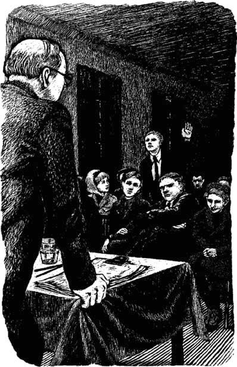

2
Listen to Part 1:

Cuộc họp thôn làng
Dân làng không thể tin nổi. Một cửa hàng ở Woodend! Mọi người đều bàn tán về điều này. Đã từng có một cửa hàng ở Woodend, nhưng nó đã đóng cửa cách đây hai mươi năm.
Một số người thì muốn cửa hàng, nhưng số khác thì không. Dân làng gặp nhau vào buổi tối tại hội trường làng. Mọi người đều có mặt. Mọi người đều quan tâm đến cửa hàng mới.
‘Cửa hàng Corner là một ý kiến hay,’ một người nói. ‘Chúng ta cần một cửa hàng trong làng. Chúng ta sẽ không cần phải đến Lidney nữa.’
Khi đó, bà Harrison lên tiếng. Bà thích người lạ kia, Dave Slatin.
‘Tôi đồng ý,’ bà nói. ‘Một cửa hàng trong làng là một ý kiến hay. Nơi này quá yên tĩnh. Woodend cần một cửa hàng.’
‘Vô lý,’ cô Brown nói. Cô là giáo viên của trường làng. ‘Lidney không xa. Có rất nhiều cửa hàng ở đó.’
Ngay sau đó, mọi người bắt đầu hét lớn. Khi đó, ông Hart phát biểu. Ông ấy là một người đàn ông to lớn, với giọng nói rất lớn.
‘Nghe này mọi người!’ ông ấy hét lớn. ‘Chúng ta chưa từng có rắc rối nào trong ngôi làng này trước đây. Chúng ta luôn yên bình và hạnh phúc. Bây giờ cửa hàng này lại gây ra rắc rối rồi.’
‘Hãy để ông Slatin phát biểu,’ một người nói. ‘Đó là cửa hàng của ông ấy. Hãy để ông ấy phát biểu.’
Listen to Part 2:
‘Thưa quý bà, quý ông,’ Dave Slatin nói. ‘Tôi không muốn gây ra bất kỳ rắc rối nào. Tôi vẫn còn là người lạ ở ngôi làng của các bạn. Nhưng tôi muốn trở thành một trong số các bạn. Tôi muốn trở thành bạn của các bạn. Tôi thích những người dân của Woodend!’
Ông ấy mỉm cười và một vài người vỗ tay. Họ thích ông ấy.
‘Cửa hàng Corner sẽ bán rất nhiều thứ,’ ông ấy tiếp tục. ‘Cửa hàng sẽ bán thực phẩm và đồ dùng gia đình. Tôi hứa là mọi thứ sẽ rất rẻ!’

Dân làng gặp nhau vào buổi tối tại hội trường làng. Mọi người đều có mặt.
Mọi người đều lắng nghe một cách chăm chú.
‘Và tôi còn một ý tưởng khác nữa,’ ông ấy nói tiếp. ‘Tôi sẽ bán các sản phẩm của làng.’
‘Ông có ý gì khi nói ‘Sản phẩm của làng’?’ cô Brown hỏi.
‘Tôi sẽ nói cho cô biết, cô Brown,’ ông ấy nói. ‘Tôi biết rằng cô làm bánh mì và bánh ngọt rất ngon.’
Cô Brown mỉm cười. Đúng, cô ấy có làm bánh mì và bánh ngọt. Tất cả mọi người đều biết điều đó.
Listen to Part 3:
‘Còn ông, ông Hart, tôi đã thấy hoa của ông. Ông trồng những bông hoa rất đẹp.’
Lúc này, ông Hart mỉm cười. Đúng, những bông hoa của ông rất đẹp. Mọi người đều biết về chúng.
‘Và ông Everett làm đồ gốm,’ một người nói.
‘Còn bà Davies làm búp bê,’ một giọng nói khác nói.
‘Còn tôi thì vẽ tranh về ngôi làng,’ bà Lucy Gray già nua nói.
‘Đúng rồi,’ Dave nói. ‘Tất cả các bạn đều có thể làm điều gì đó. Những người dân làng các bạn thật là khéo léo. Các bạn làm ra rất nhiều thứ. Chúng ta có thể bán chúng cho khách du lịch. Vào mùa hè, Woodend có thể kiếm được rất nhiều tiền!’
‘Nhưng tiền thì sao?’ ông Hart nói. ‘Ông sẽ trả tiền cho chúng tôi như thế nào?’
‘Đó là một câu hỏi hay,’ Dave nói. ‘Và đây là câu trả lời. Các bạn sẽ mang đồ đến cho tôi và tôi sẽ bán chúng cho các bạn. Tôi sẽ giữ một phần lợi nhuận. Phần còn lại là của các bạn.’
‘Ý tưởng tuyệt vời!’ cô Brown nói.
‘Đúng, tôi đồng ý!’ ông Hart nói.
Listen to Part 4:
Tất cả những người dân làng đều đồng ý. Mọi người trong làng đều hài lòng với kế hoạch của Dave Slatin.
Cửa hàng Corner mở cửa vào thứ Hai, ngày 4 tháng 1 năm 1965. Không lâu sau, cửa hàng trở nên đông đúc và Dave cần một người phụ tá.
Người phụ tá mới trong Cửa hàng Corner là Anna. Cô bắt đầu làm việc vào cuối tháng 1.
Table of contents
- Tựa bìa
- Trang tựa
- Trang bản quyền
- Mục lục
- Nhân vật trong truyện
- 1. Người lạ ở Woodend
- 2. Cuộc họp làng
- 3. Cửa hàng góc phố
- 4. Vị khách đẹp
- 5. Một trang trong 'Tin tức phim'
- 6. Nụ hôn vội
- 7. Đơn đặt hàng đặc biệt khác
- 8. Trận bóng đá
- 9. Ngày nghỉ bí mật
- 10. Cuộc cãi cọ
- 11. Arthur Riseman
- 12. Anna chờ tin
- 13. Phòng đơn đặt hàng đặc biệt
- 14. Khách hàng đặc biệt
- 15. Ngày 31 tháng 10
- Các điểm chính để hiểu